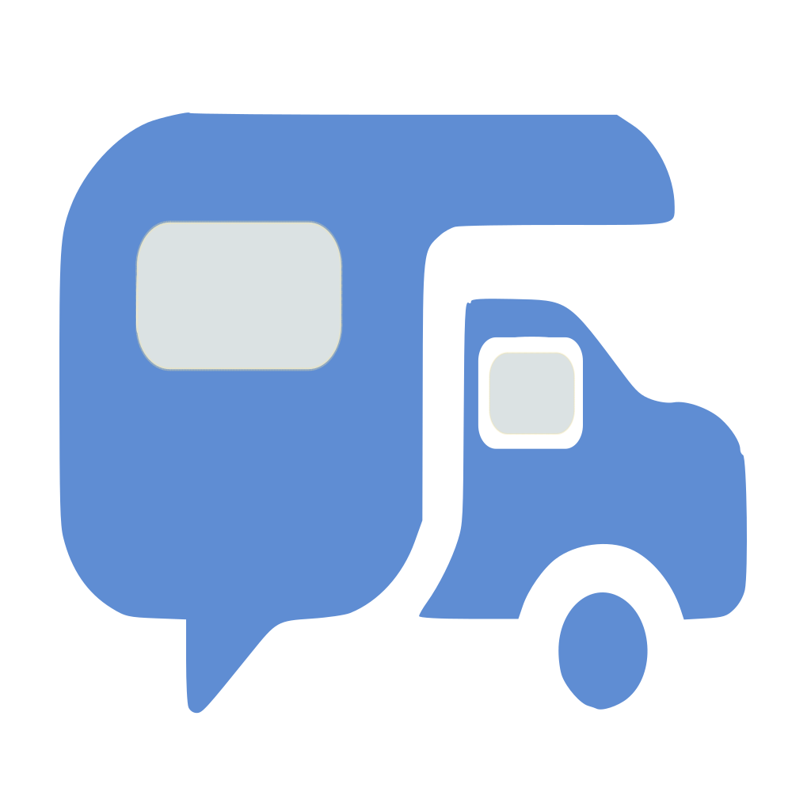
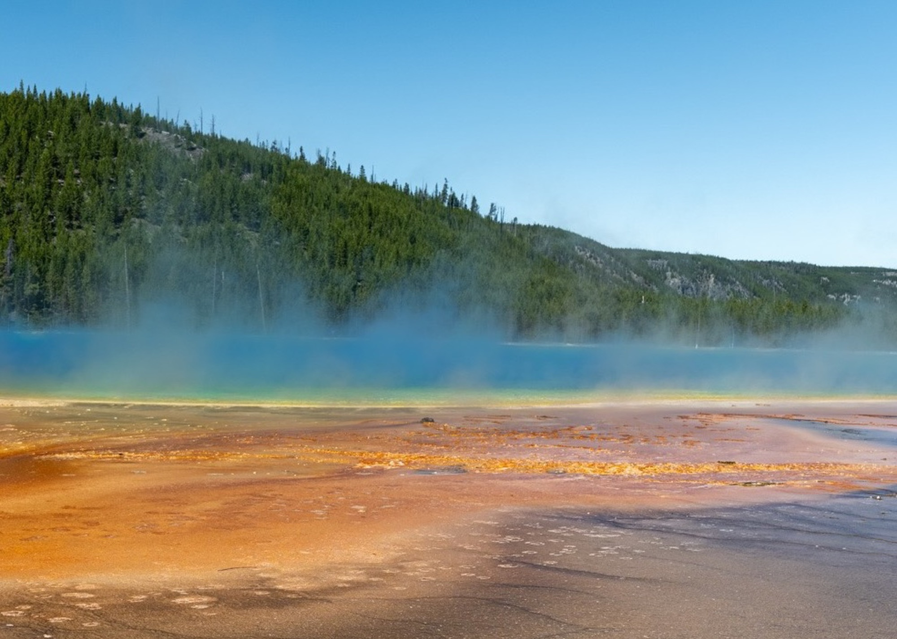
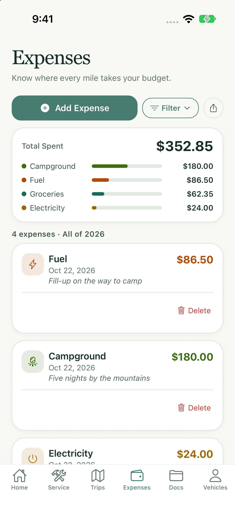
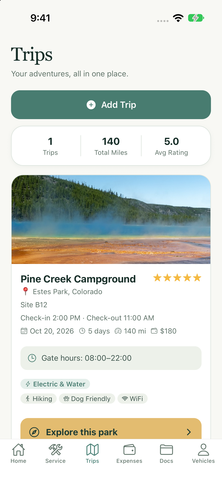

Know your rig’s
story.
Log service, mileage, repairs, and receipts. See what was done and when, set date-based reminders, and keep mileage-based maintenance in view.
A clear history for the miles ahead.
See maintenance logs ↗
TrekAssistantTake a lookTHE RV APP FOR LIFE ON THE ROAD
Track maintenance. Know what you spend. Capture the places and moments that make every trip yours—all in one RV app.
For weekend adventures, long stays, and everywhere in between.



A LITTLE ORGANIZATION. A LOT MORE FREEDOM.
A useful record of what your RV needs. A clear picture of what life on the road costs. A personal story of the places you’ve explored.
Log service, mileage, repairs, and receipts. See what was done and when, set date-based reminders, and keep mileage-based maintenance in view.
A clear history for the miles ahead.
See maintenance logs ↗Track fuel, campsites, electricity, groceries, and repairs. Keep receipts with expenses, review category totals, and use recorded fill-ups for fuel insights.
The everyday costs of RV life, in focus.
See expense tracking ↗Keep park details and favorite photos with each trip. Explore through photo challenges, replay your stay as a presentation, and share a photo story.
A personal record of the places you love.
See trips and memories ↗A LOOK INSIDE
Open your active trip, log a service, or add an expense from Home. The practical details and your next adventure start in the same place.
App screens use sample records. Tap the screen to enlarge.
EXPLORE. CAPTURE. SHARE.
Keep your site number, arrival times, gate hours, and access code handy. Then head out, find a view, and capture what makes this park special—while you’re there.
You choose the destination and complete the post yourself. Presentation playback stays in the app; shared stories are still images.
READY WHEN YOU NEED THEM
Give registration, insurance, manuals, and receipts a place beside your vehicle records. Pin what you reach for most and set expiration reminders, so you spend less time searching when it’s time to go.
Open a closer look ↗Pins and expiration reminder settings are saved on this phone.
YOUR RECORDS. YOUR MEMORIES. YOUR CHOICE.
Your service history, expenses, and trip memories belong together. Choose phone-only storage or keep a private cloud copy too. Your subscription covers your access across devices, whichever option you choose.
ONE APP FOR YOUR RV LIFE
From an oil change to a campground receipt to a favorite trail: one subscription brings the useful records and memorable moments together.
NEXT RELEASE · MONTHLY
USD · subscription through Apple
14-day free trial for eligible subscribers. Final pricing, trial eligibility, renewal terms, and cancellation options are shown by Apple before purchase.
These features and monthly pricing are coming in the next TrekAssistant release. The version currently on the App Store may differ.
YOUR NEXT STOP IS WAITING.